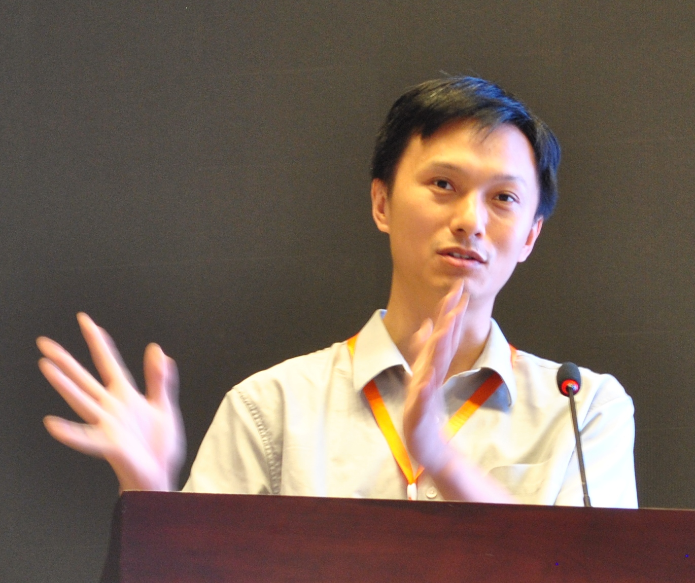

|  | 熊英飞新体制长聘副教授 北京大学
办公室：理科一号楼1431房间 |
| [ICSME21] | 梁晶晶, 吉如一, 姜佳君, 周抒睿, 娄一翎, 熊英飞, 黄罡. Interactive Patch Filtering as Debugging Aid. ICSME'21: 37th International Conference on Software Maintenance and Evolution, 2021年9月. |
| [FSE21b] | 朱琪豪, 孙泽宇, 肖元安, 张文杰, 袁康, 熊英飞, 张路. A Syntax-Guided Edit Decoder for Neural Program Repair. ESEC/FSE'21: ACM Joint European Software Engineering Conference and Symposium on the Foundations of Software Engineering, 2021年8月. ACM SIGSOFT杰出论文奖提名 |
| [FSE21a] | 王冠成#, 沈若冰#, 陈俊洁, 熊英飞, 张路. Probabilistic Delta Debugging. ESEC/FSE'21: ACM Joint European Software Engineering Conference and Symposium on the Foundations of Software Engineering, 2021年8月. [全文] ACM SIGSOFT杰出论文奖 |
| [OOPSLA20] | 吉如一, 孙奕灿, 熊英飞, 胡振江. Guiding Dynamic Programming via Structural Probability for Accelerating Programming by Example. OOPSLA'20: Object-Oriented Programming, Systems, Languages, and Applications 2020, 2020年11月. [全文][视频(国内)][视频(海外)] |
| [FSE20] | 张煜皓, 任路遥, 陈立前, 熊英飞, 張成志, 谢涛. Detecting Numerical Bugs in Neural Network Architectures. ESEC/FSE'20: ACM Joint European Software Engineering Conference and Symposium on the Foundations of Software Engineering, 2020年11月. [全文][视频(国内)][视频(海外)] ACM SIGSOFT杰出论文奖 |
| [PLDI20] | 吉如一, 梁晶晶, 熊英飞, 张路, 胡振江. Question Selection for Interactive Program Synthesis. PLDI'20: 41st ACM-SIGPLAN Symposium on Programming Language Design and Implementation, 2020年6月. [全文][视频(国内)][视频(海外)] |
| [AAAI20] | 孙泽宇, 朱琪豪, 熊英飞, 孙奕灿, 牟力立, 张路. TreeGen: A Tree-Based Transformer Architecture for Code Generation. AAAI'20: Thirty-Fourth AAAI Conference on Artificial Intelligence, 2020年1月. [全文] 口头报告 |
| [POPL20] | 邹达明, 曾沐焓, 熊英飞, Zhoulai Fu, 张路, 苏振东. Detecting Floating-Point Errors via Atomic Conditions. POPL'20: 47th ACM SIGPLAN Symposium on Principles of Programming Languages, New Orleans, Louisiana, United States , 2020年1月. [全文][视频(国内)][视频(海外)] |
| [ASE19c] | 姜佳君, 王然, 熊英飞, 陈湘萍, 张路. Combining Spectrum-Based Fault Localization and Statistical Debugging: An Empirical Study. ASE'19: 34th IEEE/ACM International Conference on Automated Software Engineering, San Diego, California, United States , 2019年11月. [全文] |
| [ASE19b] | 陈俊洁, 王冠成, 郝丹, 熊英飞, 张洪宇, 张路. History-Guided Configuration Diversification for Compiler Test-Program Generation. ASE'19: 34th IEEE/ACM International Conference on Automated Software Engineering, San Diego, California, United States , 2019年11月. [全文] ACM SIGSOFT杰出论文奖 |